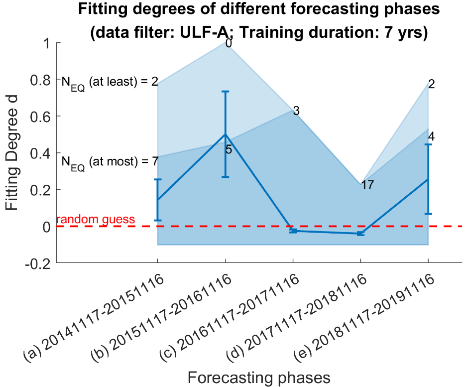

| code0 | code | format | type | Lat | Lon | StartTime | EndTime |
|---|---|---|---|---|---|---|---|
| missing | ZB | 知本 | GM | 22.7398 | 121.065 | 20201006 | missing |
| missing | XC | 新城 | GM | 24.0383 | 121.609 | 20201006 | missing |
| missing | SM | 日月潭 | GM | 23.881 | 120.908 | 20191008 | missing |
| missing | CN | 暨南 | GM | 23.9576 | 120.928 | 20221229 | missing |
| em3 | KUOL | 過嶺 | GE | 24.9629 | 121.142 | 2011-09-22 | 9999-12-31 |
| em4 | HUAL | 華陵 | GE | 24.6745 | 121.368 | 2012-01-17 | 9999-12-31 |
| em5 | TOCH | 頭城 | GE | 24.8435 | 121.805 | 2012-02-10 | 9999-12-31 |
| em6 | ENAN | 南澳 | GE | 24.4758 | 121.785 | 2012-02-15 | 9999-12-31 |
| ⋮ | ⋮ | ⋮ | ⋮ | ⋮ | ⋮ | ⋮ | ⋮ |
Tutorial
Requirements
環境
GEMS-MagTIP 依賴以下工具箱； 在 MATLAB 指令列中輸入 license('inuse') 或 ver 可以列出您電腦上目前可用的工具箱。
Toolbox in-use:
- MATLAB Version 9.11 (R2021b)
- Mapping Toolbox Version 5.2 (R2021b)
- Parallel Computing Toolbox Version 7.5 (R2021b)
- Signal Processing Toolbox Version 8.7 (R2021b)
- Statistics and Machine Learning Toolbox Version 12.2 (R2021b)
Dependencies
GEMS-MagTIP 依賴於 okatsn/toolbox 和 CGRG-lab/GEMS-MagTIP-insider。
在執行腳本前，您需要將這些依賴項加入系統的路徑設定，如下所示：
CGRG-lab/GEMS-MagTIP-insider
將 CGRG-lab/GEMS-MagTIP-insider 複製到本地磁碟中 (例如 GEMS-MagTIP-insider)，並將其內的原始碼加入系統路徑：
dir_src = 'GEMS-MagTIP-insider/src';
addpath(genpath(dir_src));okatsn/toolbox
將 okatsn/toolbox 複製到主目錄中 (例如 GEMS-MagTIP-insider/toolbox)，並將其內的原始碼加入系統路徑：
dir_toolbox = 'GEMS-MagTIP-insider/toolbox';
addpath(genpath(dir_toolbox));Getting Started
GEMS-MagTIP 的主要功能 需要以目錄中的中間數據（如 .mat 文件）作為輸入參數，並將輸出數據存放於指定的目錄中。
以下是一個主要功能操作鏈的簡單示例：
準備數據
您需要準備/更新以下數據：
- 地震目錄
- 標準格式的地電數據
- 標準格式的地磁數據
地震目錄與測站資訊
請下載或更新 GDMSN 的地震事件目錄，其中規模 (M_L )，並將其儲存至 spreadsheet/catalog.csv。 檔案 spreadsheet/station_location.csv 用於指定每個測站的位置，它直接包含在GEMS-MagTIP-insider的目錄下。
要點：
- 標題名稱：
catalog.csv：標題必須是 ‘time’、‘Lon’、‘Lat’、‘Depth’ 和 ‘Mag’。station_location.csv：標題必須是 ‘code’、‘format’、‘Lon’ 和 ‘Lat’。- 欄位名稱的排列順序可以隨意，但名稱字串必須完全一致。
- 更新地震目錄：
- 要更新地震目錄，將更新的表格以 CSV 格式儲存至
spreadsheet/catalog.csv，並啟用覆寫。 - 執行
checkcatalog(dir_catalog)來處理新的目錄。 - 如果
dir_catalog資料夾中同時存在catalog.mat和catalog.csv，則將使用更新的catalog.csv資料覆寫生成catalog.mat。
- 要更新地震目錄，將更新的表格以 CSV 格式儲存至
- 更新測站位置：
- 將更新的測站位置表格儲存至
spreadsheet/station_location.csv，並啟用覆寫。 - 遵循與更新地震目錄相同的工作流程。
- 將更新的測站位置表格儲存至
支援的目錄格式
GDMSN 格式
| date | time | lat | lon | depth | ML | nstn | dmin | gap | trms | ERH | ERZ | fixed | nph | quality |
|---|---|---|---|---|---|---|---|---|---|---|---|---|---|---|
| … | … | … | … | … | … | … | … | … | … | … | … | … | … | … |
自由格式
| time | Lon | Lat | Depth | Mag |
|---|---|---|---|---|
| 2020/8/10 06:41 | 121.59 | 23.81 | 29.86 | 3.41 |
| 2020/8/10 06:29 | 120.57 | 22.18 | 43.54 | 3.02 |
| 2020/8/10 06:14 | 121.7 | 22.17 | 124.78 | 4.13 |
| … | … | … | … | … |
以下為 station_location.csv 的部分內容範例：
標準格式數據
將原始數據轉換為標準格式非常重要。 此轉換過程包括日期時間驗證、將地電數據投影為NS-EW格式、格式化文件名稱以供索引等。
以下是一個將原始數據轉換為標準格式的簡單腳本：
dir_gems_raw = 'rawdata/GEMSdat'; % raw GEMS data
dir_mag_raw = 'rawdata/MAG'; % raw MAG data
dir_data = 'dataStandard'; % output directory
conv_gemsdata(dir_gems_raw, dir_data, dir_catalog);
conv_geomagdata(dir_mag_raw, dir_data);
Tip
您可以自由組織 dir_data 中的文件和文件夾，或者對同一原始數據進行多次轉換，因為在 GEMS-MagTIP 中數據加載依賴於標準格式的文件名，轉換功能將處理重複的文件。
參閱 standarddataname 和 write_data。
有關更多信息，請參閱加載原始數據並將其轉換為標準格式部分。
設置目錄路徑
在運行任何主要功能之前，必須分配輸入/輸出數據或變量的目錄。
例如：
% For windows, use backslash `\`; for unix systems, use slash `/` in the path to directories.
dir_catalog = 'spreadsheet';
% directory of event catalog & station location
dir_data = 'dataStandard';
% directory of geomagnetic timeseries of "standard format"
dir_stat = 'output_var/StatisticIndex';
% directory of statistic indices
dir_tsAIN = 'output_var/tsAIN';
% directory for storing anomaly index number (AIN)
dir_molchan = 'output_var/Molchan';
% directory for storing Molchan scores
dir_jointstation = 'output_var/JointStation';
% directory for the time series of EQK, TIP and probability
Tip
- 您可以使用
mkdir_default自動生成主要功能所需的空目錄。 - 您可以使用
dirselectassign通過文件瀏覽器界面分配目錄。
Important
dir_catalog必須包含catalog.csv或catalog.mat，以及station_location.csv或station_location.mat。dir_data是包含 GE 或 GM 標準格式數據的目錄；請參閱conv_geomagdata和conv_gemsdata以將原始數據轉換為標準格式。
按正確的順序執行主要功能
statind(dir_data,dir_stat);
anomalyind(dir_stat,dir_tsAIN);
molscore(dir_tsAIN,dir_catalog,dir_molchan);
molscore3(dir_tsAIN,dir_molchan,dir_catalog,dir_jointstation);
Tip
statind、molscore 和 molscore3 有平行計算的替代方案。 在大多數情況下，您只需在函數名稱後附加 _parfor (例如，molscore3_parfor(...)) 即可在不修改輸入參數的情況下進行平行運行。 參閱 statind_parfor、molscore_parfor 和 molscore3_parfor。
綜合範例腳本
以下是整個流程的範例腳本 “demo/demo_script.m”。
Tip
您可以運行 startup0.m 並按照命令視窗中的指示，添加依賴項並分配如上所述的輸入/輸出目錄。
%% GEMS-MagTIP 2024
% Follow the instruction to complete the settings. They are written in startup.m
%% Convert Raw data to standard type
% Load original data and save them as matfiles of the standard format
conv_gemsdata(dir_data0gems, dir_data, dir_catalog,'FilterByDatetime',datetime(2020,1,1)); % Convert raw GE data of timestamps after 2020 to standard format. Use FilterByDatetime when standard geomagnetic data out of the specified date-time range already exist.
conv_geomagdata(dir_data0mag, dir_data,'FilterByDatetime',datetime(2020,1,1)); % The same as above but for the conversion of GM data.
%% Calculate Statistic Index
statind_parfor(dir_data,dir_stat, ... % Load data in dir_data, save index in dir_stat
'Preprocess',{'ULF_A','ULF_B','BP_40','BP_35'}, ... % with 4 kinds of filtering
'SavePreprocessedData',false, ... % without saving filtered timeseries
'StatName', {'S', 'K', 'FI', 'SE'}, ...
'StatFunction', {@skewness, @kurtosis, @fisherinformation, @shannonentropy}, ...
'FilterByDatetime',[datetime(2011,1,1), datetime(2022,12,31)]); % This means only statistical indices between 2011 and the end of 2022 will be calculated. Noted that standard format GE/GM data have to be available in this range, otherwise you will get NaN if data is missing (or not converted) in `dir_data`.
%% Data overview
% An overview of data avaliability/deficiency according to the results in dir_stat
plot_dataoverview(dir_stat, dir_catalog);
%% Calculate Anomaly Indices
anomalyind(dir_stat,dir_tsAIN);
%% Training
molscore_parfor(dir_tsAIN,dir_catalog,dir_molchan,...
'TrainingPhase', {calyears(3),datetime(2022,4,1);...
calyears(5),datetime(2022,4,1);...
calyears(7),datetime(2022,4,1);...
calyears(9),datetime(2022,4,1)},...
'modparam',{'Test', 5000}); % Remember to disable 'Test' in a real run.
%% Forecast and test
molscore3_parfor(dir_tsAIN,dir_molchan,dir_catalog,dir_jointstation,...
'OverwriteFile',true, ...
'ForecastingPhase', repmat([datetime(2022,4,2), datetime(2022,9,27)], 4,1));
% Manually assign forecasting phases.結果可視化
繪製每個測站的 EQK-TIP
%% Plot EQK-TIP of each station
% the output directory for the images
dir_png = fullfile(dir_molchan,'png','EQKTIP'); % no need to mkdir
% Plot TIP of individual stations as heatmap,
% with target earthquakes (EQK) scattered on the top.
plotEQKTIP1(dir_tsAIN,dir_molchan,dir_catalog,dir_png); %,...
'ForecastingPhase',calyears(1),'ShowTrainingPhase',1,'Rank',1,...
'ForceMagnitude',false, ...
'scatter',1);
% remove the white space around the image.
cropimg(dir_png,'SaveInplace',true);
EQK-TIP 在 2D 時間-空間座標系統中的表示
%% EQK-TIP in a 2D temporal-spatial coordinate system
dir_png = fullfile(dir_jointstation,'png', 'EQKTIP3'); mkdir(dir_png);
% Find the data of ID 'AMn6ei' and filter tag 'ULF_A'
jid = 'AMn6ei';
filter_tag = 'ULF_A';
jpathlist = datalist(sprintf('[JointStation]ID[%s]prp[%s]*.mat', jid, filter_tag), dir_jointstation).fullpath;
% Retrieve essential data from '[JointStation]' files in the jpathlist:
[AlarmedRate, MissingRate,xlabels, EQKs, TIP3s, TIPv3s, TIPTimes, LatLons] = ...
calcFittingDegree(jpathlist);
% Plot EQK-TIP on a 2D temporal-spatial coordinates
titletag = sprintf('EQK-TIP (trial ID: %s; filter: %s)', jid, filter_tag)
plotEQKTIP3(dir_png, titletag, xlabels, EQKs, TIP3s, TIPv3s,TIPTimes, LatLons);
繪製擬合程度
%% Plot fitting degree
dir_png = fullfile(dir_jointstation,'fitting_degree'); mkdir(dir_png);
plotFittingDegree(dir_jointstation,dir_catalog,dir_png,...
'ConfidenceLevel',0.95);
繪製概率圖
%% Plot probability map
% the output directory for the images
dir_prob = fullfile(dir_jointstation,'png','prob');
% specific datetime to be plotted
dates2plot = [datetime(2020,12,1):caldays(30):datetime(2021,2,11)]';
% plot GEMS-MagTIP probability map
% (export individual image for each date)
dir_prob2 = plotProbability(dir_jointstation,dir_catalog,dir_prob, ...
'TimeRange',dates2plot,...
'PlotEpicenter','all');
);